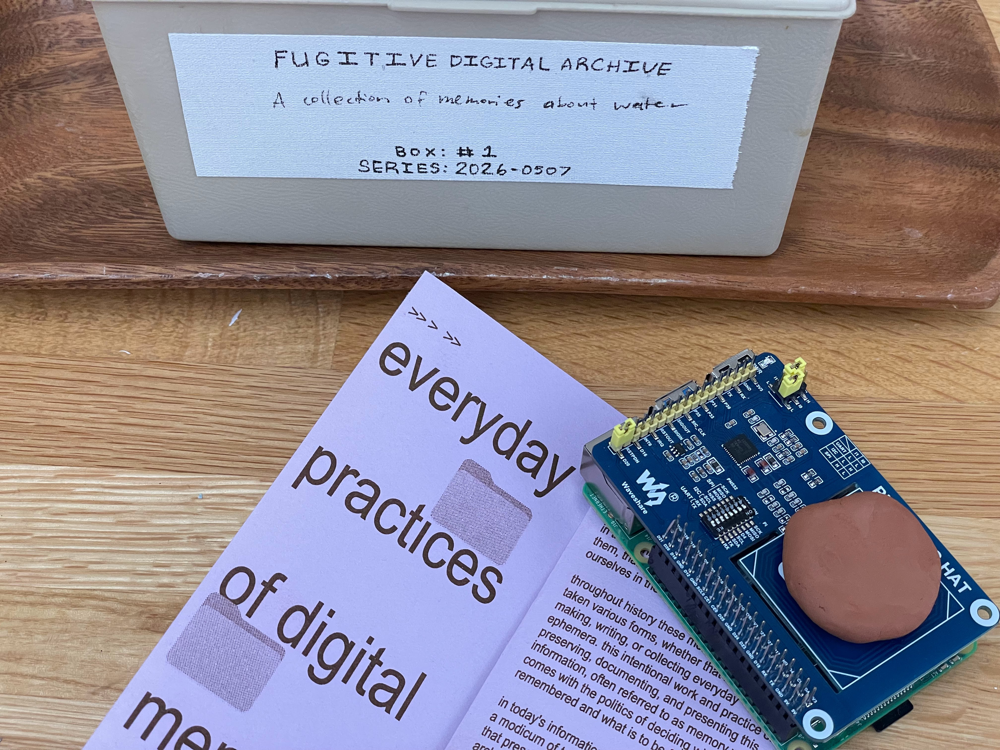

Fugitive digital archives is a research and design provocation that explores how one might design a digital archive and its surrounding infrasttructure in a way that enables and encourages "digital disobedience". The piece asks, in what ways can an archival technology trouble our current relationship with saving our memories and histories through digital platforms? How can a piece of archival technology communicate a set of new values and considerations for how digital archives can be designed to center fugitivity?